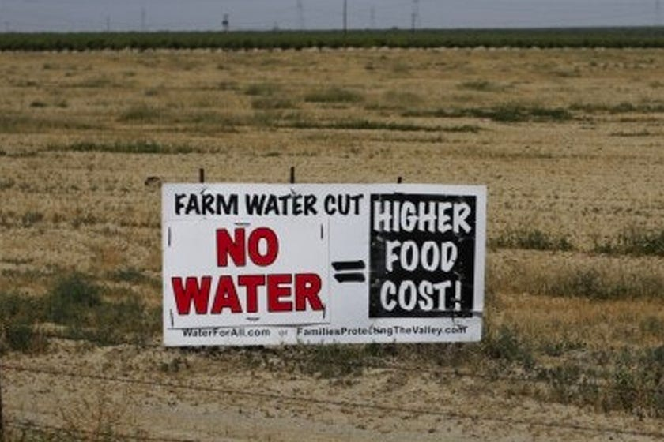
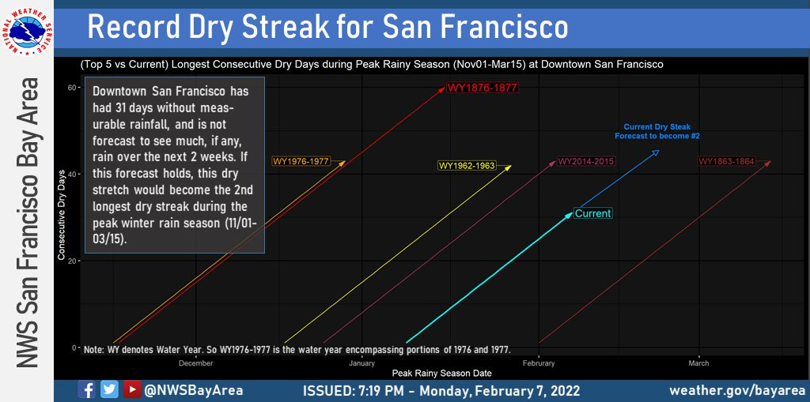
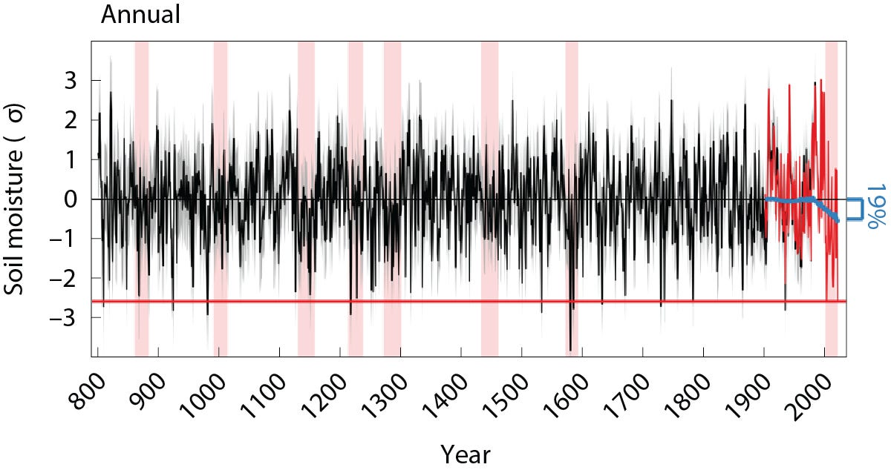
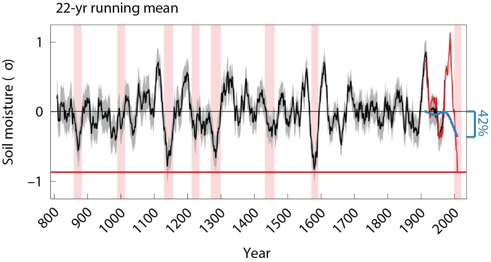

You can read Healing for free, and you can reach me directly by replying to this email. If someone forwarded you this email, they’re asking you to sign up. You can do that below.
If you really want to help spread the word, then pay for the otherwise free subscription. I use any money I collect to increase readership through Facebook and LinkedIn ads.
Thank you for reading Healing the Earth with Technology. This post is public so feel free to share it.
Today’s opening quote:
“Life was born in water and is carrying on in water. Water is life's mater and matrix, mother and medium. There is no life without water. Life could leave the ocean when it learned to grow a skin, a bag in which to take the water with it. We are still living in water, having the water now inside.” Albert Szent-Györgyi (Nobel Prize in Physiology or Medicine, 1937 for "discoveries in connection with the biological combustion processes, with special reference to vitamin C.") in Perspectives in Biology and Medicine , Johns Hopkins University Press , Volume 14, Number 2, Winter 1971 pp. 239-249 DOI: 10.1353/pbm.1971.0014
This quote reinforces the central thesis developed over many of the past 34 installments. Briefly:
-
Life affects climate
-
Water affects life
-
To affect climate, look to water.
Today’s read: 6 minutes.
What caught my attention this week was a piece on the California drought on PBS: “ Study finds Western megadrought is the worst in 1,200 years ”. It’s one of those “interesting if true” headlines that made me scratch my head. The article went on to assert that “roughly one-fifth of the current megadrought can be attributed to human-caused climate change.” So, it’s not just your average run-of-the-mill dry spell. It’s a “megadrought”.
As a current California resident, it’s pretty apparent that the state’s water reserves are decreasing. Farmers along Interstate 5 (in the Central Valley) have been moaning about it for years:

As I write this, my local (San Francisco) news outlets proclaim that we are approaching the second-longest dry stretch on record for the area’s ‘rainy season’. (an easy to measure but odd way of defining a drought). The data:

My issue with the headline (and its explanation) is this: Twelve hundred years ago, what is now the western United States was populated by “native” Americans. These tribes are not known for accurate recordkeeping. So, how did the scientists obtain rainfall data from the 9th century AD? Further, attributing the drought to “climate change” is just the sort of hook that both Editorial Boards and mainstream journalists seek. But we know that climate models suck. So, how solid is that connection?
A recent Nature Climate Change article by UCLA professor A. Park Williams provided the foundation for the PBS piece. It was an update of an earlier paper in Science on the same subject. The key measurements are the width of tree rings from more than 1,500 samples, coming from a scientific field I hadn’t heard of before: Dendrochronology and its subspecialty dendroclimatology—yes, there are scientists whose life’s work is studying tree rings! The concept is straightforward: Tree rings result from the yearly growth of a tree, and, particularly in arid regions like the southwestern U. S., it’s pretty reasonable to assume that more water = more growth. While many environmental and biological factors affect the development of a specific tree, a particularly wet or dry season will affect all trees in a region to the same extent.
But, the core conclusion pertains to climate , not weather . Buried deep in the supplementary material for the Science paper is the following:
Biological growth trends unrelated to climate…were removed using conservative detrending methods meant to maximize the preservation of low-frequency variability thought to be due to climate.
In other words, the primary data set is extensive and comprehensive but noisy. On the plus side, it’s data collected for data’s sake, but the climate effects are what remain after removing biological variation. In other words, to isolate “low-frequency” variability due to shifts in water patterns, the data needs to be processed still further. That’s a lot of assumptions, so let’s look at the progression:


These charts mix data sources. Most of the data is a “reconstruction” (black lines) which assumes a correlation between tree ring width and soil moisture. Slogging through the detailed materials and methods reveals that the ‘observed’ soil moisture measurements (red lines) are pretty far removed from primary data. The red line isn’t directly observed. It’s a complex mixture of rainfall, temperature, relative humidity, wind speed, barometric pressure, solar intensity, absorption rates of soil, and even evapotranspiration by vegetation. Ultimately, the paper admits, it’s “Model-calibrated soil moisture”. That’s not a criticism. The observed “data” is derivative, based on historical meteorology. I’m not sure how else you get comprehensive regional data on the water that’s available to trees in past decades in a more direct fashion.
In this graph, the authors show soil moisture modeled from meteorological data alongside measurements of tree ring widths (normalized to reflect annual growth), both averaged over 22 years (which turns out to be the operational definition of a “megadrought”). The overlap is only 39 data points of about 1200. My immediate concern is, “Shouldn’t these line up if the modeling is accurate? Look at the observed vs. actual data in the early 20th century!” The observed (modeled) water availability is at the upper boundary of the 95% confidence interval for the tree ring data. In other words, trees did not grow as much as expected based on water use models.
I don’t think that this lack of predictability invalidates the correspondence between meteorology and dendrochronology. On the contrary, it may reinforce it. In the first half of the 20th century, humans built dams and reservoirs to capture and store water, potentially leading to less water available for tree growth than historical trends.
What about the effect of “climate change”?
Now, I’ve got a real problem, not because the attribution is inaccurate, but because the conclusion doesn’t flow from the data. It turns out that the authors took synthetic meteorological data from climate models, with and without “forcing” attributed to human activity by other modelers, and plugged it into their soil moisture models! In other words, the climate models already predicted less rainfall and higher temperatures attributed to global warming, and, unsurprisingly, this leads to less water available to trees.
In my opinion, that’s not even close to newsworthy, and it shouldn’t be an article in either Nature or Science . Without the imprimatur of prestigious journals, it wouldn’t have been picked up by PBS. Hell, I could have written the article! None of the data was new. It’s all on public servers. The headline has nothing to do with the data from tree rings, which only measure droughts that have happened in the past. The current drought isn’t even the worst on record unless you look at the processed data the right way! The width of the pink bars shows the length of the drought (longest is >22 years!), and the smallest biologically adjusted tree ring samples were observed sometime in the late 1500s (>3 standard deviations from the norm). That was well before the factors leading to “ACC” began. Even longer “megadroughts” have been reported more accurately elsewhere in the world, like the European drought of 1540 .
I am forced to conclude that the “climate change” angle was simply a hook to gain publicity.
Until next week…